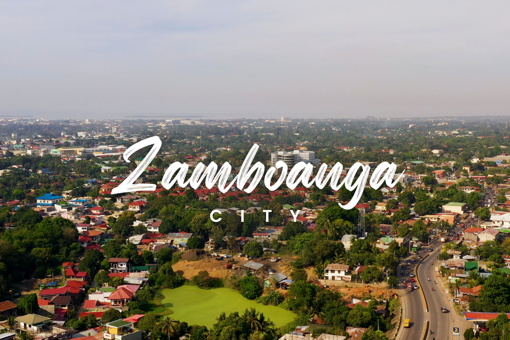
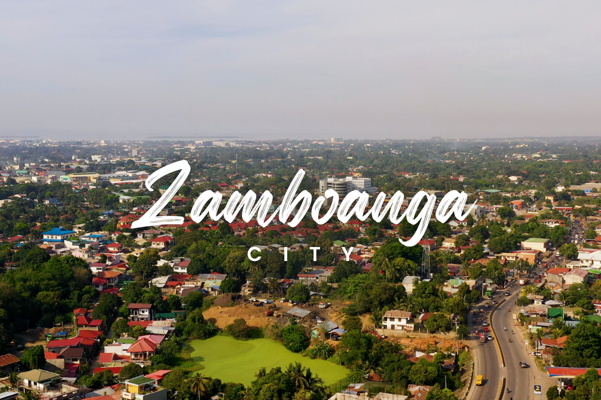
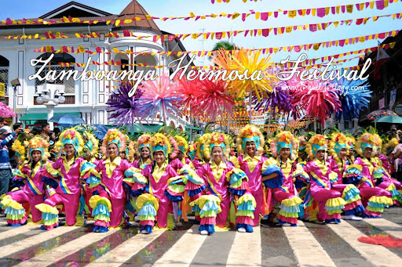

Zamboanga City Travel Guide
 

What is Zamboanga City?
Zamboanga City, officially the City of Zamboanga, is a 1st class highly urbanized city in the Zamboanga Peninsula region of the Philippines. According to the 2020 census, it has a population of 977,234 people.It is the fifth-most populous and third-largest city by land area in the Philippines and also the second most populous in Mindanao after Davao City. It is the commercial and industrial center of the Zamboanga Peninsula Region.
Where is it?
The southwest and eastern sides of Zamboanga City are bounded by irregular coastlines with generally rocky terrain and occasional stretches of sandy or gravelly beaches. The coastal profile usually descends abruptly towards the sea. Where rivers enter the sea, bays have formed, and the surrounding area has filled up with alluvial soils, producing small to large coastal plains.
What is Zamboanga City known for?
Zamboanga City, known for its old Spanish fort, Fort Pilar. A tourist destination besides being considered as Highly Urbanized and Independent city in the region. It is also known as the third older charter city in the Philippines. In 2006, Zamboanga City was re-labeled from "City of Flowers" to "Asia's Latin City".
Zamboanga City's Culture and Traditions
The Zamboangueños have a unique connection to Roman Catholicism. Their social lives typically revolve around various religious practices and traditions. Some of these traditions still observed up to some extent are the bantayanon, fiestas, and fondas. Their dances (bailes) include the vals, regodon, and paso doble. The community also continues various traditions connected to religious celebrations and enjoys its own festivals. For instance, the Hermosa Festival, also called the Fiesta Pilar, honors Zamboanga City’s patron saint, Nuestra Señora de la Virgen del Pilar. This fiesta is celebrated every October 12, which is also a special holiday in the city. Another festival that is connected to the people’s strong Catholic belief is the Pascua na Zamboanga (Christmas in Zamboanga). During this time, families and communities come together to enjoy various activities. Nowadays, this event is also filled with numerous spectacles to make Christmas special for the Zamboangueños. Aside from the religious practices and the festivals, further evidence of European influences can be observed in the jota zamboangueña dance. Here, women perform to Zamboangueño songs with movements similar to the quick-stepping flamenco but with bamboo clappers instead of Spanish castanets. This dance, along with other dances with Iberian influences, is performed during the fiestas and other formal tertulias (festivities).
Popular tourist spots
The Department of Tourism has selected Zamboanga City as a flagship tourism destination in Zamboanga Peninsula.[162] Domestic and foreign tourist arrivals increased 8 percent to 439,160 in 2005, according to data from the regional tourism office. The same report notes that Filipinos accounted for 80 percent of the tourist arrivals. Moreover, 50 percent of those tourists visited the city before.[163] Zamboanga City's famous Pink Sand Beach of Santa Cruz was recognized by the National Geographic as one of the "World's 21 Best Beaches" in 2018.[164] A surge in tourist arrivals was recorded in 2018 that hit almost 100,000. A day-trip to the island includes a hop to Little Santa Cruz's long white sand bar and a tour of the island's lagoon known for its rich ecosystem. Another rising tourist hub is the newly opened 11 Islands (commonly called Onçe Islas), a group of islands with white-sand beaches and sand bars located in the city's east coast. Despite the warnings and seasonal advisories, growth in terms of arrivals tells otherwise. The negative impressions shows no effect on the Tourist's perception of the place in general.
Thank you for reading